クラウドエース株式会社さんのフィード
https://zenn.dev/cloud_ace
クラウドエース株式会社 公式技術ブログです
フィード
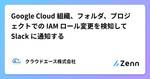
Google Cloud 組織、フォルダ、プロジェクトでの IAM ロール変更を検知して Slack に通知する
クラウドエース株式会社さんのフィード
はじめにこんにちは！クラウドエースの SRE 部に所属している小田です。IAM（Identity and Access Management）は、Google Cloud リソースへのアクセスを制御する上で非常に重要な役割を持っていますが、IAM ロールの追加や削除により、意図せずセキュリティ上の脆弱性を生み出したり、システムの誤動作を招く可能性があるため監視が必要です。本記事では、Google Cloud 組織、フォルダ、プロジェクトのどこかで IAM ロールが変更された際に、検知して通知する Slack Bot の実装方法をご紹介します。 Cloud Asset Inv...
11時間前
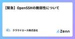
【緊急】OpenSSHの脆弱性について 33
33
クラウドエース株式会社さんのフィード
こんにちは、クラウドエースの SRE チームに所属している妹尾です。今回は OpenSSH の脆弱性についての速報です。2024/07/02 に、CVE-2024-6387が発表されました。これは放置しておくと SSH を受け付ける全てのサーバーを乗っ取る事ができてしまう脆弱性です。厄介なことにデフォルト設定の SSH と、ある程度の時間さえあれば乗っ取りが成功してしまう上、 Compute Engine もその影響を受ける そうで、緊急度もかなり高めになっております。 結局どうすればいいのGoogle が公表している、 GCP-2024-040 の手順に従いましょう。(...
13時間前
2024 年 6 月第 5 週の Google Cloud の主なリリースに関するニュース
クラウドエース株式会社さんのフィード
クラウドエースの山本です。6 月 24 日 〜 6 月 28 日の期間にアナウンスされた Google Cloud の主なリリースに関してご紹介します。!該当日の全ての情報を掲載しているものではございません。すべてのリリースノートを確認されたい方は、当該ページからご確認ください。 Cloud Composerヨハネスブルグ リージョン (africa-south1) で利用可能になりました Cloud LoggingOps Agent バージョン 2.48.0 では、Debian 11（Bullseye）をベースにしたディープラーニング用の VM イメージを...
15時間前
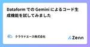
Dataform での Gemini によるコード生成機能を試してみました 1
クラウドエース株式会社さんのフィード
はじめにこんにちは、クラウドエース データソリューション部の田中です。クラウドエース データソリューション部 についてクラウドエースの IT エンジニアリングを担う システム開発統括部 の中で、特にデータ基盤構築・分析基盤構築からデータ分析までを含む一貫したデータ課題の解決を専門とするのが データソリューション部 です。弊社では、新たに仲間に加わってくださる方を募集しています。もし、ご興味があれば エントリー をお待ちしております！データソリューション部では、Google Cloud が提供しているデータ領域のプロダクトについて、新規リリースをキャッチアップするための調査...
2日前
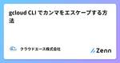
gcloud CLI でカンマをエスケープする方法
クラウドエース株式会社さんのフィード
TL;DR以下のように、^ で囲った文字列が新しい区切り文字となり、カンマをエスケープできます。--list-flag=^:^a,b:c,d # => ['a,b', 'c,d']https://cloud.google.com/sdk/gcloud/reference/topic/escaping 対象読者gcloud CLI を使っているカンマを含む文字列を引数に渡したい はじめにこんにちは。クラウドエース バックエンドエンジニアリング部 の伊藝です。みなさんは、gcloud CLI を使ったことがありますか？gcloud CLI は、Googl...
4日前
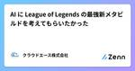
AI に League of Legends の最強新メタビルドを考えてもらいたかった
クラウドエース株式会社さんのフィード
TL;DRAI に League of Legends のビルドを考えてもらって実践したらボコボコに負けました。 対象読者League of Legends をプレイしている人LLM に興味がある人Gemini 1.5 Pro に興味がある人LLM で大きいデータを楽に扱いたい人 サモナーズリフトへようこそこんにちは。クラウドエース バックエンドエンジニアリング部 の伊藝です。みなさんは、League of Legends をプレイされていますか？League of Legends (LoL) とは、Riot Games が開発した 5 対 5 のマルチプ...
4日前
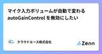
マイク入力ボリュームが自動で変わる autoGainControl を無効にしたい 1
クラウドエース株式会社さんのフィード
TL;DR以下のように audio.autoGainControl オプションを指定することで、マイク入力のボリュームが自動で調整されます。audio.autoGainControl は、audio: true と指定した場合にも、デフォルトで true になっています。navigator.mediaDevices.getUserMedia({ audio: { autoGainControl: true } }); // or { audio: true }無効にするためには、以下のように autoGainControl: false を指定します。navigator.m...
4日前
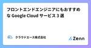
フロントエンドエンジニアにもおすすめな Google Cloud サービス 3 選 1
クラウドエース株式会社さんのフィード
こんにちは、クラウドエース株式会社、フロントエンドエンジニアのサンギです。フロントエンドエンジニアが Web アプリケーションをデプロイするときにおすすめな Google Cloud サービスを 3 つ紹介します。Cloud Run、App Engine、Firebase Hosting に的を絞って、それぞれの使い方を紹介します。 1. Cloud RunCloud Run は、コンテナ化されたステートレスなアプリケーションを実行できるサーバーレスプラットフォームです。 デプロイ方法 Google Cloud の設定Google Cloud コンソールから Clou...
4日前
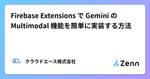
Firebase Extensions で Gemini の Multimodal 機能を簡単に実装する方法
クラウドエース株式会社さんのフィード
はじめにこんにちは、クラウドエース株式会社の美波です。最近、AI 技術の進化により、現代のアプリケーションは新たな次元へと進化しています。先日、Google が提供する Firebase プラットフォームに新たな標準として追加された「 Vertex AI for Firebase 」など、AI の活用がますます盛んになっています。この記事では、Firebase Extensions の Multimodal Tasks with the Gemini API を使用して、簡単に AI を活用する方法やその性能の特徴、実際の導入手順について解説します。 Firebase Ex...
5日前
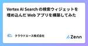
Vertex AI Search の検索ウィジェットを埋め込んだ Web アプリを構築してみた 1
クラウドエース株式会社さんのフィード
こんにちは、クラウドエース株式会社 フロントエンド・UI/UX 部の松尾です。この記事では Vertex AI Agent Builder の機能の一つである Vertex AI Search による Retrieval-Augmented Generation（以下、RAG）システムを、簡単に Web アプリに埋め込む方法をご紹介します。 Vertex AI Search とは？Vertex AI Search は、Vertex AI Agent Builder という Google Cloud のプロダクトの一部で、Google の生成 AI 技術を利用して簡単に検索システ...
5日前
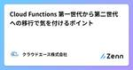
Cloud Functions 第一世代から第二世代への移行で気を付けるポイント
クラウドエース株式会社さんのフィード
初めにこんにちは。クラウドエース バックエンドエンジニアリング部の王です。この記事では、Cloud Functions を第一世代から第二世代にアップグレードする際に気付いた注意点について紹介します。 Cloud Functions の第一世代と第二世代Cloud Functions は、サーバーレスコンピューティングの分野で広く利用されているツールですが、2022年夏から Google は第二世代を一般提供しました。第二世代には、同時実行性の向上や広範な CloudEvents のサポートなど、いくつかの利点があります。また、公式ドキュメントの Cloud Funct...
7日前
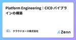
Platform Engineering：CICD パイプラインの構築
クラウドエース株式会社さんのフィード
はじめにSRE 部の岸本です。前回に引き続き、Platform Engineering についてです。テーマは「GKE で始める Platform Engineering~実践編~」です。 Platform Engineering とはPlatform Engineering とは、組織において有用な抽象化を行い、セルフサービス インフラストラクチャを構築するアプローチです。ポイントとしては、以下の 2 つが挙げられます。インフラの有用な抽象化デベロッパーの生産性の向上詳細については、前回の記事をご参照ください。 今回のテーマ前回は Platform E...
7日前
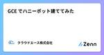
GCE でハニーポット建ててみた
クラウドエース株式会社さんのフィード
クラウドエース SRE 部のアイルトンです。SRE 部の中で、セキュリティギルドのギルドマスターをしています。ギルド活動の一環として、 Google Compute Engine (以降、GCE と表記) でハニーポットを構築してみんなで観察してみたので、その時の記録を共有したいと思います。 ハニーポットとは不正なアクセスを受けることを前提として意図的に設置される「罠」のようなシステム・ネットワークのことです。攻撃者に侵入させやすい状態をつくり攻撃者の行動を監視することで、攻撃に関する対策を用意するのに使われています。 検証方法以下のブログを参考にハニーポット（T-Po...
7日前
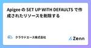
Apigee の SET UP WITH DEFAULTS で作成されたリソースを削除する
クラウドエース株式会社さんのフィード
はじめにクラウドエースの吉田です。先日 Apigee を触ってみようと思い、軽い気持ちで SET UP WITH DEFAULTS ボタンを押したところ、自動で様々なリソースが作成されてしまい、その後処理に追われることになりました。今後、そのような状況になっても困らないよう、SET UP WITH DEFAULTS によって作成されるリソースの削除方法を紹介いたします。本記事では各リソースの解説は行わず、削除方法のみの紹介となります。 作成されるリソースApigee 組織Apigee 環境Apigee インスタンスIP アドレス静的内部 IP アドレス静...
8日前
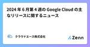
2024 年 6 月第 4 週の Google Cloud の主なリリースに関するニュース
クラウドエース株式会社さんのフィード
クラウドエースの山本です。6 月 17 日 〜 6 月 21 日の期間にアナウンスされた Google Cloud の主なリリースに関してご紹介します。!該当日の全ての情報を掲載しているものではございません。すべてのリリースノートを確認されたい方は、当該ページからご確認ください。 BigQuerygemini-1.0-pro-002 モデルに基づいた BigQuery ML リモートモデルで、教師ありチューニングが実行可能（Preview）BigQuery DataFrames Python API を使用して、教師ありチューニングを実行することもできますb...
9日前
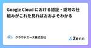
Google Cloud における認証・認可の仕組みがこれを見ればおおよそわかる
クラウドエース株式会社さんのフィード
はじめにこんにちは、最近運動不足が気になり chocoZAP に通い始めた SRE 部門の 潘 (Han) です。今回は、Google Cloud で使われている様々な認証・認可の仕組みと推奨方法をまとめました。 概要Google Cloud では基本の IAM をはじめとしてプリンシパル (ユーザーやサービスアカウントのこと) を認証・認可する仕組みがいくつか存在しています。アプリケーションから Google Cloud 上のリソースにアクセスするためのクレデンシャルを取得する手段もいくつか存在しています。どの方法が最も推奨される方法なのか、 ケース毎のベストプラクティ...
11日前
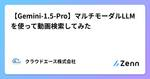
【Gemini-1.5-Pro】マルチモーダルLLMを使って動画検索してみた 1
クラウドエース株式会社さんのフィード
こんにちは、クラウドエース SRE ディビジョン所属の茜です。今回は、マルチモーダル LLM として注目されている Gemini-1.5-Pro を使用して、自然言語での動画検索が可能な簡易的なアプリケーションを作成します。 マルチモーダル LLM とはマルチモーダル LLM (Large Language Model) は、テキストだけでなく、画像、音声、動画などの複数のモダリティのデータを理解し、処理することができる大規模言語モデルです。従来の LLM がテキストのみを扱うのに対し、マルチモーダル LLM は異なる種類のデータを統合し、より幅広いタスクに対応することができま...
11日前
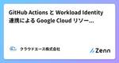
GitHub Actions と Workload Identity 連携による Google Cloud リソース管理のハンズオン 1
クラウドエース株式会社さんのフィード
はじめにこんにちは、クラウドエース SRE 部所属の大槻です。クラウドエースでは、Terraform による Google Cloud リソース管理を実践する機会が多くあります。そこで今回は、Google Cloud での CI/CD 手法を 1 つ紹介したいと思います。GitHub Actions のワークフローを使用して、Open ID Connect (以下、OIDC) による認証を行い、 Terraform で Google Cloud リソースを管理する方法をハンズオン形式で紹介していきます。 Workload Identity 連携GitHub Actions ...
14日前

2024 年 6 月第 3 週の Google Cloud の主なリリースに関するニュース
クラウドエース株式会社さんのフィード
6 月 10 日 〜 6 月 14 日の期間にアナウンスされた Google Cloud の主なリリースに関してご紹介します。!該当日の全ての情報を掲載しているものではございません。すべてのリリースノートを確認されたい方は、当該ページからご確認ください。 Virtual Private Cloud （VPC）Private Service Connect Port Mapping（Preview）単一の Private Service Connect エンドポイントを介すことにより、コンシューマー 仮想マシン（VM）インスタンスから特定のプロデューサー VM 上の特定の...
14日前
Eraser の Diagram as Code を使って Google Cloud のアーキテクチャ図を書いてみよう
クラウドエース株式会社さんのフィード
こんにちは、クラウドエース株式会社 SRE 部の阿部です。今日は Eraser の Diagram as Code を使ったアーキテクチャ図の作成についてご紹介いたします。 はじめに当社クラウドエースでは Google Cloud を中心としたクラウド製品の提案・設計・構築およびソフトウェア開発を生業としています。そのため、しばしば提案や設計において、アーキテクチャ図を書くことが多いです。 アーキテクチャ図とは何かアーキテクチャ図はシステムの構造を理解するためには必要不可欠な図であり、Google Cloud に限らず様々なシステム設計で書き起こすことになる文書だと思います...
14日前